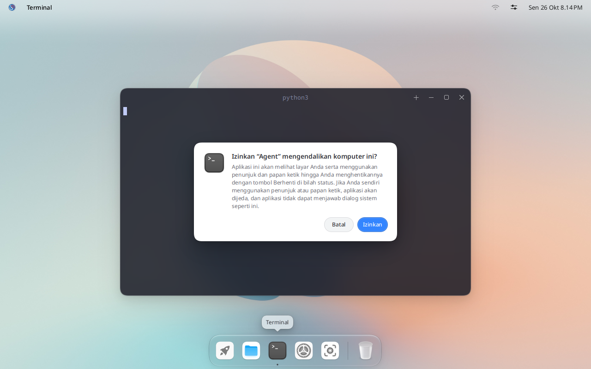
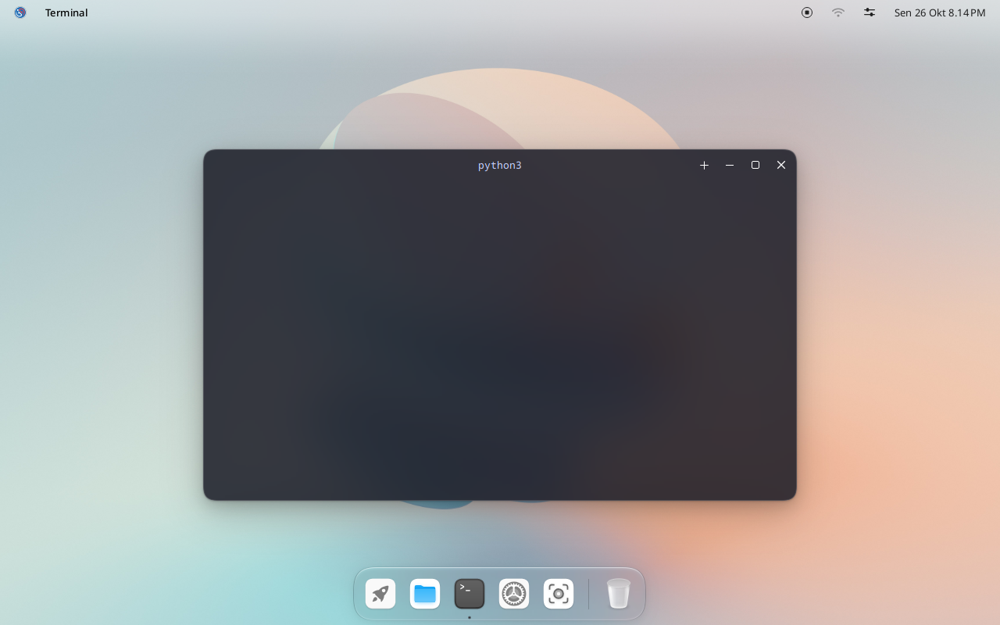

Dokumentasi IGN 26
Bayu untuk agen
Bayu bisa mengizinkan agen AI melihat layar dan memakai tetikus serta papan ketik. Itu hanya terjadi setelah Anda mengizinkan, dan bisa dihentikan dengan satu klik.
Cara kerjanya
Aplikasi agen, misalnya Claude Code, berbicara dengan bayu-computer-use, program kecil yang memakai MCP (Model Context Protocol). Saat agen pertama kali ingin melihat atau memakai desktop, Bayu bertanya kepada Anda:


Tidak ada yang terjadi sebelum Anda mengeklik Izinkan. Setelah itu:
- Tombol Berhenti muncul di bilah atas selama agen memegang kendali. Klik untuk menghentikan agen saat itu juga.
- Saat Anda sendiri memakai tetikus atau papan ketik, agen berhenti sejenak.
- Agen tidak bisa menjawab dialog sistem, seperti permintaan kata sandi atau dialog izin ini.


Memasang bayu-computer-use
Pasang alat untuk membangunnya:
sudo dnf install cargo git
Unduh bagian ini saja dari kode sumber Bayu, lalu bangun:
git clone --depth 1 --filter=blob:none --sparse https://github.com/igos-nusantara/bayu.git
cd bayu
git sparse-checkout set components/bayu-computer-use
cd components/bayu-computer-use
rm .cargo/config.toml
cargo build --release
sudo install -m 755 target/release/bayu-computer-use /usr/bin/
Baris rm menghapus pengaturan khusus untuk build Debian. Tanpa baris itu, build tidak bisa mengunduh pustaka yang dibutuhkan.
Lalu keluar dan masuk lagi (klik logo di pojok kiri atas, lalu Keluar). Bayu mencari /usr/bin/bayu-computer-use saat Anda masuk, dan hanya memercayai program di lokasi itu.
Menghubungkan agen
Untuk Claude Code:
claude mcp add bayu -- /usr/bin/bayu-computer-use
Untuk aplikasi agen lain, tambahkan server MCP yang menjalankan /usr/bin/bayu-computer-use lewat stdio, tanpa argumen. Banyak aplikasi memakai format ini:
{ "mcpServers": { "bayu": { "command": "/usr/bin/bayu-computer-use" } } }
Jalankan aplikasi agen dari desktop, misalnya di Terminal. Dialog izin menampilkan nama agen dan aplikasi tempat agen itu berjalan.
Yang bisa dilakukan agen
Berikut alat yang diberikan bayu-computer-use kepada agen:
| Alat | Fungsinya |
|---|---|
screenshot | Mengambil gambar seluruh layar, atau satu jendela |
zoom | Menampilkan satu bagian layar dengan resolusi penuh, untuk membaca teks kecil |
click | Memindahkan penunjuk ke satu titik lalu mengeklik |
move_pointer | Memindahkan penunjuk, misalnya untuk hover |
drag | Menekan di satu titik, bergeser ke titik lain, lalu melepas |
mouse_down, mouse_up | Menekan atau melepas tombol tetikus, untuk seretan yang tidak bisa dilakukan drag |
cursor_position | Memberi tahu posisi penunjuk |
scroll | Menggulir dengan roda tetikus |
type_text | Mengetik teks di tempat fokus papan ketik berada |
press_keys | Menekan tombol atau pintasan, misalnya ctrl+s |
hold_keys | Menahan tombol selama beberapa saat |
set_clipboard | Menaruh teks di papan klip |
keyboard_shortcuts | Menampilkan daftar pintasan sistem |
list_windows | Menampilkan daftar jendela yang terbuka |
activate_window | Membawa jendela ke depan |
close_window | Menutup jendela, sama seperti tombol tutupnya |
set_window_frame | Memindahkan dan mengubah ukuran jendela |
list_applications | Menampilkan daftar aplikasi terpasang |
open_application | Menjalankan aplikasi terpasang |
open | Membuka berkas, folder, atau alamat web |
actions | Menjalankan beberapa alat di atas berurutan |
Jika tidak berjalan
Jika agen melaporkan This session does not let bayu-computer-use control the computer, berarti programnya tidak berada di tempat yang diharapkan Bayu, atau Anda belum keluar dan masuk lagi sejak memasangnya. Pastikan /usr/bin/bayu-computer-use ada, lalu keluar dan masuk lagi.